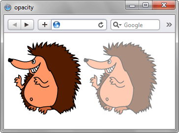

opacity
Определяет уровень прозрачности элемента веб-страницы. При частичной или полной прозрачности через элемент проступает фоновый рисунок или другие элементы, расположенные ниже полупрозрачного объекта.
Краткая информация
| Значение по умолчанию | 1 |
|---|---|
| Наследуется | Нет |
| Применяется | Ко всем элементам |
Синтаксис
opacity: <число>Значения
В качестве значения выступает число из диапазона [0.0; 1.0]. Значение 0 соответствует полной прозрачности элемента, 1, наоборот — его непрозрачности. Дробные числа вида 0.6 устанавливают полупрозрачность. Допускается писать числа без нуля впереди, вида opacity: .6.
Пример
<!DOCTYPE html>
<html>
<head>
<meta charset="utf-8">
<title>opacity</title>
<style>
.semi {
opacity: 0.5; /* Полупрозрачность элемента */
}
</style>
</head>
<body>
<p>
<img src="images/igels.png" alt="Обычный рисунок">
<img src="images/igels.png" alt="Полупрозрачный рисунок" class="semi">
</p>
</body>
</html>Результат данного примера показан на рис. 1.

Рис. 1. Результат использования opacity
Объектная модель
Объект.style.opacity
Примечание
Firefox до версии 3.5 поддерживает нестандартное свойство -moz-opacity.
Internet Explorer до версии 9.0 для изменения прозрачности использует фильтры, для этого браузера следует записать filter: alpha(opacity=50), где параметр opacity может принимать значение от 0 до 100.
Спецификация
| Спецификация | Статус |
|---|---|
| CSS Transitions | Рабочий проект |
| CSS Color Module Level 3 | Рекомендация |
Браузеры
| Internet Explorer | Chrome | Opera | Safari | Firefox | |
| 9 | 1 | 9 | 1.2 | 1 | 3.5 |
| Android | Firefox Mobile | Opera Mobile | Safari Mobile |
| 1 | 1 | 9 | 3.2 |